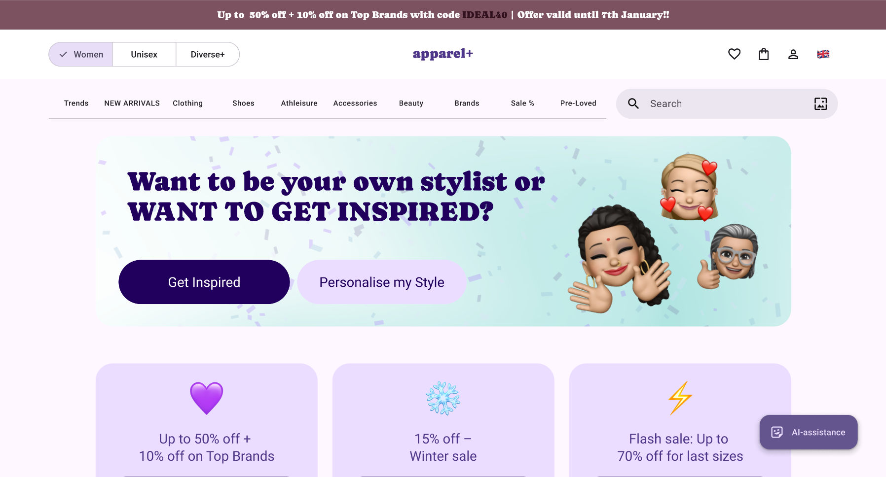

Inclusive Female Fashion
E-Commerce Design
Body-Centered UX Design.
How body image shapes the online shopping experience — and what we can do about it.
- Role
- UX Researcher · Co-designer · Wireframing · Co-author
- Timeline
- 2024 – 2025
- Outcome
- Published at CHI 2026, Barcelona
- Type
- Research project
The problem.
— A cycle of guessing, not seeing yourself, and blaming yourself.
Online fashion shopping is supposed to be convenient. But for most women, it's exhausting: a cycle of guessing your size, not seeing yourself in the models, feeling vaguely bad about your body, and then blaming yourself when something doesn't fit.
We wanted to know why. Not in a vague, "representation matters" way, but specifically, how does the design of fashion e-commerce websites contribute to this experience? And what would it look like if we fixed it?
Why this hadn't been studied
Fashion e-commerce is considered a "solved" UX problem. The flows are smooth, the patterns are established, conversion rates are tracked obsessively. But optimising for sales isn't the same as designing for people. The emotional and embodied experience of shopping for clothes (how it makes you feel about your body, your choices, yourself) had barely been studied at all.
What we did.
— A five-phase research process, real shoppers at the centre.
We ran a five-phase research process, keeping real shoppers at the centre of every step.
Exploratory survey
31 participants navigated real fashion websites and told us what worked and what didn't. Over 65% reported not seeing models that reflected their body type, weight, or skin colour.
Co-design sessions
9 participants annotated screenshots of real fashion websites, marked what frustrated them, and sketched their ideal shopping experience. What surfaced wasn't just aesthetic frustration: it was a deeper sense of not being the intended customer.
Iterative prototyping
We built two versions of an inclusive fashion e-commerce prototype, testing each with real users through think-aloud sessions. I joined at this stage, turning research insights into an interactive prototype: the UI, two distinct user flows, and the key features from the co-design findings.
Body mapping study
14 participants drew body maps representing how online shopping made them feel, then drew a second one after interacting with our prototype. The first maps were full of anxiety and self-blame; the second were calmer, with hearts and smiles.
What we found.
— Three things making the experience worse than it needed to be.
Lack of inclusivity
Not just in model diversity, but in how the entire system was built. Search filters, sizing categories, photo compositions: all of it assumed a narrow body as the default.
Sizing anxiety
Women weren't just struggling to find their size. They were blaming themselves for not fitting the clothes, rather than blaming the clothes for not fitting them. That's a design failure.
Invisible emotional labour
Shopping for clothes online is mentally exhausting in ways that go largely unacknowledged. Participants described it as "mental gymnastics," feeling overwhelmed, anxious, and drained by the end.
What we designed.
— Two flows, and features people actually asked for.
The prototype introduced two distinct user journeys: a Purchase Flow for goal-directed shopping, and a Get Inspired Flow for exploration.
- Diverse models shown in natural poses from multiple angles, including close-ups of fabric
- A customisable avatar for visualising fit, with privacy-conscious slider inputs instead of body measurements
- Filters for fabric type, fit, and style preferences, not just standard size categories
- A unisex section, care instructions, and transparent sizing information upfront
Every feature came directly from what participants told us they needed. Nothing was added for novelty.

After interacting with the prototype, participants described feeling confident, comfortable, less stressed, and in control. The body maps told the same story visually: less clutter, fewer anxious annotations, more space, more hearts.
Publication
This research was published at CHI 2026 (the ACM Conference on Human Factors in Computing Systems, the most prestigious venue in HCI) in Barcelona, April 2026.
What I learnt
Research at this scale taught me that listening carefully is a design skill. The most important features in our final prototype weren't invented. They were heard. Participants sketched them in co-design sessions, they came up in interviews, they showed up in body maps. My job was to translate that into something real and usable.
It also reinforced something I want to carry into every project: standard usability isn't enough. A website can follow every best practice and still make its users feel invisible.